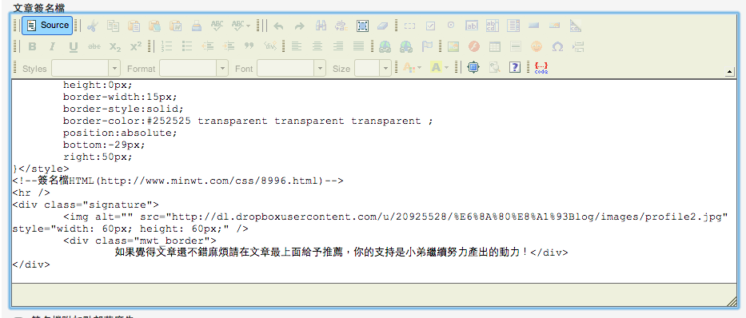

小弟最近發現原來文章推薦數有點少(文章寫得太沒內容…orz)，所以只好用哀兵策略，跪求看完文章的大大們給點指教或按個推薦之類的，想說來弄個簽名檔提醒大家一下吧
剛好之前有看到梅問題用CSS做對話框的效果
這邊使用他教學的範例做了一些小修正後搭配了圖片寫成下面的html與CSS
|
|
將上面的的內容貼到後台組態設定的文章簽名檔中的Source內(如下圖)

這邊要稍微注意一下，上面程式碼中倒數的幾行，在編輯存檔後如果再進去原始碼修改則編輯器會把下面兩行清除，所以這邊建議可以先用註解的方式包起來之後有編修簽名檔的時候要記得把這兩行手動加回來。
|
|
以上就可完成一個對話框效果的簽名檔摟，大家一起來改一下吧～